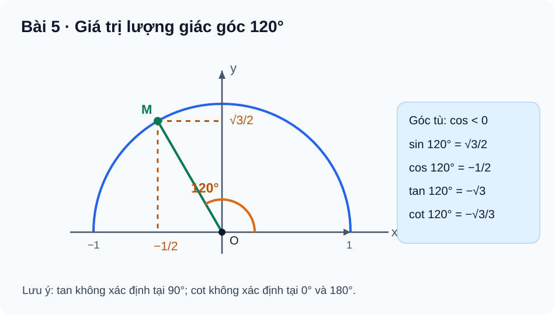

HỌC THEO CHUYÊN ĐỀ · CĐ12 · TOÁN THPT
Học theo từng mảng kiến thức CĐ12; tự làm Vận dụng trước khi mở Đối chiếu.
Khám phá thêm: Mô hình trực quan Chuyên đề 12 (tùy chọn).
Kiến thức
1. Từ một góc đến hai con số có ý nghĩa
Vì sao có thể đo độ dài không thể chạm tới? Giả sử hai người đứng ở A và B trên bờ sông, biết khoảng cách AB và có thể ngắm một mốc C ở bờ bên kia. Không cần kéo thước qua sông: các góc nhìn và độ dài AB đã đủ để dựng nên một tam giác rồi suy ra các cạnh còn lại. Nhưng trước hết, ta phải hiểu sin và côsin của những góc lớn hơn 90° — điều mà tam giác vuông đơn lẻ không giải thích hết.
1.1. Giá trị lượng giác của góc 0°–180°
Hãy tưởng tượng một kim dài đúng một đơn vị quay quanh gốc O từ trục ngang dương đến vị trí tạo góc α, với \(0^{\circ} \le \alpha \le 180^{\circ}\). Đầu kim là điểm M nằm trên nửa đường tròn phía trên, nên nếu M có tọa độ \((x,y)\) thì \(x^{2}+y^{2}=1\), \(y\ge 0\). Ta gọi côsin là hoành độ \(\cos \alpha=x\), sin là tung độ \(\sin \alpha=y\). Định nghĩa này nối liền góc nhọn, góc vuông và góc tù, thay vì buộc ta học ba trường hợp rời rạc.

Cách đọc hình: Đi từ O đến M theo bán kính 1. Tại góc 120°, M nằm bên trái trục Oy và bên trên Ox, vì vậy \(\cos 120^{\circ}=-1/2\), \(\sin 120^{\circ}=\sqrt{3}/2\). Nét đứt là hình chiếu tọa độ, không phải cạnh của một tam giác cần tính. Góc 180° nằm trên trục Ox âm: sin=0, cos=-1.
ĐỊNH NGHĨA — Sin và côsin góc 0°–180°
Trên nửa đường tròn đơn vị \(0^\circ\le\alpha\le180^\circ\), điểm cuối \(M=(\cos\alpha,\sin\alpha)\). Côsin là hoành độ (có thể âm), sin là tung độ (không âm).
Ví dụ
Đề bài: Tìm tọa độ điểm trên nửa đường tròn đơn vị ứng với góc 135°.
Lời giải: Góc 135° bù với 45° nên cos135°=−√2/2 và sin135°=√2/2. Điểm M=(−√2/2,√2/2), đúng ở góc phần tư II.
Vận dụng Không nhìn bảng, dự đoán dấu của \(\sin 150^{\circ}\) và \(\cos 150^{\circ}\) trước khi tính.
Đối chiếu
150° là góc tù: điểm trên nửa đường tròn phía trên bên trái, do đó sin dương và cos âm. Cụ thể sin150°=1/2, cos150°=-√3/2. Nếu viết cos dương, hãy quay lại vị trí hình chiếu M trên trục hoành rồi làm bài luyện về cosin góc tù. **Kiểm lỗi** Nếu em chọn cos120° dương, đọc hình nửa đường tròn ở **Kiến thức 1.1**: hoành độ bên trái trục Oy phải âm. Tự làm **Bài luyện 1** và **Bài luyện 3**.1.2. Góc đặc biệt và góc bù
Điểm trên nửa đường tròn tại hai góc \(\alpha\) và \(180^{\circ}-\alpha\) có cùng chiều cao nhưng hoành độ đối nhau. Bởi vậy:
| Góc | 0° | 30° | 45° | 60° | 90° | 120° | 135° | 150° | 180° |
|---|---|---|---|---|---|---|---|---|---|
| sin | 0 | 1/2 | √2/2 | √3/2 | 1 | √3/2 | √2/2 | 1/2 | 0 |
| cos | 1 | √3/2 | √2/2 | 1/2 | 0 | −1/2 | −√2/2 | −√3/2 | −1 |
Hai góc phụ nhau trong \([0^\circ,90^\circ]\) cũng có quan hệ dễ đọc từ tam giác vuông: \(\sin(90^\circ-\alpha)=\cos\alpha\), \(\cos(90^\circ-\alpha)=\sin\alpha\). Chẳng hạn \(\sin30^\circ=\cos60^\circ=1/2\). Với hai góc bù nhau, sin giữ nguyên còn cos đổi dấu. Kết hợp bảng dưới đây, em có thể tự suy ra giá trị tang và côtang mà không cần học thuộc hai bảng khác nhau.
| Góc | 0° | 30° | 45° | 60° | 90° | 120° | 135° | 150° | 180° |
|---|---|---|---|---|---|---|---|---|---|
| tan | 0 | √3/3 | 1 | √3 | Không xác định | −√3 | −1 | −√3/3 | 0 |
| cot | Không xác định | √3 | 1 | √3/3 | 0 | −√3/3 | −1 | −√3 | Không xác định |
Đây là phần nối tiếp bảng sin và cos phía trên, không phải một định nghĩa mới. Chẳng hạn \(\tan120^\circ=\sin120^\circ/\cos120^\circ=(\sqrt3/2)/(-1/2)=-\sqrt3\). Phải ghi “không xác định” khi mẫu bằng 0; không thể thay bằng dấu vô cực.
Chẳng hạn, \(\sin 135^{\circ}+\cos 120^{\circ}=\sqrt{2}/2-1/2=(\sqrt{2}-1)/2\). Ta nhận ra trước \(135^{\circ}=180^{\circ}-45^{\circ}\), \(120^{\circ}=180^{\circ}-60^{\circ}\) rồi mới tính, vì quy luật dấu mới là điều quan trọng.
TÍNH CHẤT — Góc bù và dấu
[\sin(180^\circ-\alpha)=\sin\alpha,\qquad\cos(180^\circ-\alpha)=-\cos\alpha.] Với góc tù trên nửa đường tròn, sin dương và cos âm, ngoại trừ các đầu mút có sin bằng 0.
Ví dụ
Đề bài: Tính sin150°−cos120° không dùng máy tính.
Lời giải: sin150°=sin30°=1/2 và cos120°=−cos60°=−1/2, nên kết quả bằng 1. Dấu âm của cos góc tù quyết định lời giải.
Vận dụng Tính \(\sin 150^{\circ}+\cos 120^{\circ}\) mà không dùng máy tính.
Đối chiếu
\(\sin 150^{\circ}=1/2\), \(\cos 120^{\circ}=-1/2\), tổng bằng **0**. Nếu nhầm dấu côsin, ôn lại cách đọc nửa đường tròn ở mục 1 và làm bài luyện về góc bù. **Kiểm lỗi** Nếu em nhầm sin của góc bù với cos, đọc **Kiến thức 1.2**. Tự đưa góc về góc nhọn trong **Bài luyện 5** và **Bài luyện 7** rồi kiểm dấu.1.3. Tang và côtang
Sin và cos là tọa độ nên đều xác định trên đoạn \(0^{\circ}\text{ đến }180^{\circ}\). Tang và côtang là tỉ số tọa độ:
Với \(\alpha\) và \(180^\circ-\alpha\), khi các tỉ số cùng xác định thì \(\tan(180^\circ-\alpha)=-\tan\alpha\) và \(\cot(180^\circ-\alpha)=-\cot\alpha\). Đó là hệ quả trực tiếp của việc sin giữ dấu và cos đổi dấu, chứ không phải hai công thức độc lập phải học máy móc.
Vì vậy, \(\tan 90^{\circ}\) không xác định; \(\cot 0^{\circ}\) và \(\cot 180^{\circ}\) không xác định; ngược lại \(\tan 180^{\circ}=0\) có nghĩa. Đối với góc tù, sin dương và cos âm, nên tang/côtang khi xác định đều âm.
Chẳng hạn, Góc tù α có \(\tan \alpha=-2\): từ \(1+\tan^{2}\alpha=1/\cos^{2}\alpha\) suy \(\cos^{2}\alpha=1/5\), chọn cos âm vì góc tù, nên \(\cos \alpha=-1/\sqrt{5}\), \(\sin \alpha=2/\sqrt{5}\), \(\cot \alpha=-1/2\).
ĐỊNH NGHĨA — Tang và côtang
[\tan\alpha=\frac{\sin\alpha}{\cos\alpha}\quad(\cos\alpha\ne0),\qquad\cot\alpha=\frac{\cos\alpha}{\sin\alpha}\quad(\sin\alpha\ne0).] Phải kiểm mẫu số khác 0 trước khi tính.
Ví dụ
Đề bài: Tính tan120° và cot120°; có đại lượng nào không xác định?
Lời giải: sin120°=√3/2, cos120°=−1/2 đều khác 0; tan120°=−√3, cot120°=−1/√3=−√3/3. Hai tỉ số đều xác định.
Vận dụng Tại \(\alpha=90^{\circ}\), đại lượng nào không xác định: \(\sin \alpha\), \(\cos \alpha\), \(\tan \alpha\), hay cả ba?
Đối chiếu
Chỉ **tanα** không xác định vì mẫu cos90°=0. Nếu nghĩ cos90° không xác định, quay lại định nghĩa hoành độ ở mục 1 và làm bài luyện về điều kiện của tang. **Kiểm lỗi** Nếu em nghĩ tan90° có giá trị, xem điều kiện mẫu cos khác 0 ở **Kiến thức 1.3**. Làm **Bài luyện 2** và **Bài luyện 8** trước khi dùng phép chia.1.4. Hệ thức lượng giác và dấu
Vì M luôn nằm trên đường tròn đơn vị nên \(x^{2}+y^{2}=1\), tức là:
Chia hai vế cho \(\cos^{2}\alpha\) hoặc \(\sin^{2}\alpha\) chỉ khi mẫu khác 0 mới được các hệ thức \(1+\tan^{2}\alpha=1/\cos^{2}\alpha\) và \(1+\cot^{2}\alpha=1/\sin^{2}\alpha\). Biết bình phương không tự cho biết dấu. Với góc tù α và \(\sin \alpha=3/5\), ta có \(\cos^{2}\alpha=16/25\), rồi chọn \(\cos \alpha=-4/5\), không phải \(+4/5\).
TÍNH CHẤT — Hệ thức lượng giác
[\sin^2\alpha+\cos^2\alpha=1.] Căn từ bình phương phải chọn dấu theo góc phần tư; không mặc định cos dương với góc tù.
Ví dụ
Đề bài: Góc tù α có sinα=5/13. Tính cosα và tanα.
Lời giải: cos²α=1−25/169=144/169. Vì α tù nên cosα=−12/13 và tanα=−5/12, không tự chọn dấu dương khi lấy căn.
Vận dụng Góc tù α thỏa \(\cos \alpha=-5/13\). Hãy tính sinα và tanα.
Đối chiếu
\(\sin^{2}\alpha=1-25/169=144/169\); vì 0°<α<180° nên sin không âm, ở đây sinα=12/13. Do đó tanα=(12/13)/(−5/13)=**−12/5**. Nếu chọn sin âm, hãy xem lại vị trí M ở mục 1 rồi làm bài luyện về dấu của sin và cosin. **Kiểm lỗi** Nếu em lấy sin âm của góc tù sau khi tính sin², quay lại **Kiến thức 1.4** và nửa đường tròn. Làm **Bài luyện 4** và **Bài luyện 19**, kiểm dấu trước khi lấy căn.2. Tam giác bất kỳ: tìm một cạnh từ hai cạnh và góc
2.1. Định lí côsin
Trong một tam giác không suy biến ABC, đặt \(a=BC\), \(b=CA\), \(c=AB\), lần lượt đối diện các góc A,B,C. Cả ba cạnh dương, \(a+b>c\), \(b+c>a\), \(c+a>b\); ba góc đều trong \((0^{\circ},180^{\circ})\) và có tổng 180°.
Nếu đặt A ở gốc tọa độ, B tại \((c,0)\) và C tại \((b \cos A,b \sin A)\), độ dài BC bằng khoảng cách giữa hai điểm này. Bình phương hai tọa độ chênh lệch rồi dùng \(\sin^{2}A+\cos^{2}A=1\), ta được:
Đó là định lí côsin. Khi A vuông, cosA=0, nó chính là Pitago. Khi A tù, cosA âm nên \(a^{2}>b^{2}+c^{2}\), phản ánh cạnh đối diện góc tù dài hơn.

Cách đọc hình: Góc 60° nằm ở A, xen giữa hai cạnh AB=c=8 và AC=b=6, không phải giữa b và a. Vì vậy \(a^{2}=6^{2}+8^{2}-2\cdot 6\cdot 8\cdot \cos 60^{\circ}=52\), \(a=2\sqrt{13}\). Hình còn đánh dấu vùng diện tích; đừng đọc chiều cao ngoài tam giác thành cạnh BC.
ĐỊNH LÝ — Côsin
Trong tam giác không suy biến, với a đối diện A: [a^2=b^2+c^2-2bc\cos A.] Dùng khi biết hai cạnh kẹp góc hoặc ba cạnh để xác định một góc, và nhớ \(\cos A<0\) nếu A tù.
Ví dụ
Đề bài: Tam giác có b=7, c=9, A=60°. Tính a.
Lời giải: Dùng côsin vì biết hai cạnh kẹp góc: a²=49+81−2·7·9·cos60°=67. Cạnh dương nên a=√67.
Vận dụng Cho \(b=5, c=7, A=60^{\circ}\). Hãy tìm a và giải thích vì sao không dùng Pitago trực tiếp.
Đối chiếu
\(a^{2}=25+49-2\cdot 5\cdot 7\cdot (1/2)=39\), nên **a=√39**. Pitago chỉ dùng trực tiếp khi góc xen giữa 90°. Nếu đặt nhầm cạnh đối diện, quay lại sơ đồ a=BC, b=CA, c=AB rồi làm bài luyện về định lí cosin. **Kiểm lỗi** Nếu em dùng Pitago khi góc kẹp 120° hoặc gán sai cạnh đối diện, đọc **Kiến thức 2.1**, làm **Bài luyện 10** và **Bài luyện 21** bằng định lí côsin.2.2. Định lí sin
Diện tích cùng một tam giác có thể tính bằng \(S=1/2 bc \sin A=1/2 ca \sin B=1/2 ab \sin C\). Chia từng biểu thức cho \(abc/2\) (ba cạnh dương) thu được \(\sin A/a=\sin B/b=\sin C/c\). Định lí sin phát biểu đầy đủ:
trong đó R là bán kính đường tròn ngoại tiếp. Trong tam giác không suy biến, các góc A,B,C thuộc \((0^{\circ},180^{\circ})\) nên sin của chúng dương.
Chẳng hạn, Với \(A=30^{\circ}, B=45^{\circ}, a=5\), góc \(C=105^{\circ}\), rồi \(b=5\cdot \sin 45^{\circ}/\sin 30^{\circ}=5\sqrt{2}\). Mặt khác \(2R=a/\sin A=10\) nên \(R=5\). Ta dùng định lí sin vì có sẵn một cặp cạnh–góc đối diện và cần cặp còn lại.
ĐỊNH LÝ — Sin
Với a,b,c đối diện A,B,C trong cùng tam giác: [\frac a{\sin A}=\frac b{\sin B}=\frac c{\sin C}=2R.] Ba góc của tam giác dương và tổng 180°, R là bán kính ngoại tiếp.
Ví dụ
Đề bài: Tam giác có A=45°, B=60°, a=√2. Tính b và R ngoại tiếp.
Lời giải: C=75°. Theo định lí sin b=a·sin60°/sin45°=√3; 2R=a/sin45°=2, nên R=1.
Vận dụng \(A=30^{\circ}, B=60^{\circ}, a=4\). Tìm b và R.
Đối chiếu
\(b=4 \sin 60^{\circ}/\sin 30^{\circ}=4\sqrt{3}\), \(2R=4/\sin 30^{\circ}=8\), nên **R=4**. Nếu lấy b/a=sinA/sinB, xem lại thứ tự đối diện rồi làm bài luyện về định lí sin. **Kiểm lỗi** Nếu em đảo cạnh và góc đối diện trong định lí sin, đọc **Kiến thức 2.2**, tự tìm góc thứ ba trong **Bài luyện 12** và **Bài luyện 14**, kiểm lại từng cặp cạnh–góc.2.3. Chọn phương pháp giải tam giác
| Đã biết | Tìm tiếp | Lý do chọn |
|---|---|---|
| SSS: ba cạnh | Góc | Dùng côsin: công thức nối đúng ba cạnh với góc đối diện |
| SAS: hai cạnh và góc xen giữa | Cạnh thứ ba | Dùng côsin trước, vì đã biết góc ở giữa hai cạnh |
| ASA/AAS: hai góc và một cạnh | Hai cạnh khác | Tính góc còn lại, rồi dùng sin |
| SSA: hai cạnh và góc không xen giữa | Số tam giác? | Phải kiểm tra 0, 1 hay 2 nghiệm trước; không tự gán một tam giác |
Chẳng hạn, với dữ kiện ba cạnh, Ba cạnh \(7,8,9\) tạo thành tam giác vì thỏa bất đẳng thức tam giác. Với \(a=7,b=8,c=9\), \(\cos C=(a^{2}+b^{2}-c^{2})/(2ab)=(49+64-81)/112=2/7\). Định lí côsin chọn C vì biết cạnh c đối diện góc cần tìm.
PHƯƠNG PHÁP — Chọn công cụ theo dữ kiện
SAS/SSS thường bắt đầu từ định lý côsin; ASA/AAS thường chọn định lý sin sau khi tính góc thứ ba. Trường hợp SSA phải kiểm có 0/1/2 tam giác trước khi kết luận.
Ví dụ
Đề bài: Tam giác có a=4,b=5,c=6. Muốn tìm C chọn phương pháp nào và tính cosC.
Lời giải: Vì 4+5>6, tam giác tồn tại. Biết ba cạnh nên dùng côsin: cosC=(a²+b²−c²)/(2ab)=(16+25−36)/40=1/8.
Vận dụng Tam giác có ba cạnh 6,8,10: góc đối diện cạnh 10 bằng bao nhiêu? Diện tích bao nhiêu?
Đối chiếu
\(6^{2}+8^{2}=10^{2}\), nên góc đối diện cạnh 10 là **90°**. Diện tích bằng \(1/2\cdot 6\cdot 8=24\) đơn vị vuông. Nếu chỉ biết ba cạnh mà áp dụng ngay định lí sin, quay lại bảng SSS rồi làm bài luyện về góc vuông từ ba cạnh. **Kiểm lỗi** Nếu em biết ba cạnh mà bắt đầu từ định lí sin, đọc bảng chọn phương pháp ở **Kiến thức 2.3**. Làm **Bài luyện 17** và **Bài luyện 23**, kiểm SSS và Pitago đảo/côsin.2.4. Trường hợp hai cạnh và một góc không xen giữa (SSA)
Giả sử biết \(A=30^{\circ}, a=5, b=8\). Định lí sin cho \(\sin B=b \sin A/a=4/5\). Nhưng trên đoạn \((0^{\circ},180^{\circ})\), hai góc bù nhau có cùng sin. Vì vậy \(B_{1}\approx 53,13^{\circ}\), \(B_{2}\approx 126,87^{\circ}\). Cả hai có \(A+B<180^{\circ}\), nên tồn tại hai tam giác khác nhau; tương ứng \(C_{1}\approx 96,87^{\circ}\) hoặc \(C_{2}\approx 23,13^{\circ}\).
Trên máy tính, trước khi bấm \(\sin^{-1}(t)\) hay arcsin, phải đặt chế độ DEG vì các góc ở đây đo bằng độ. Phím \(\sin^{-1}\) thường chỉ cho nghiệm chính trong \([-90^\circ,90^\circ]\), nhưng một tam giác còn có thể dùng góc bù \(180^\circ-B_1\); đó là lý do không dừng ngay sau khi máy hiện một góc. Để tránh hai giá trị gần nhau do làm tròn, giữ nhiều chữ số khi tính và chỉ làm tròn ở đáp số cuối.
Muốn giải SSA an toàn, tính \(t=b \sin A/a\) trước: nếu \(t>1\), không có tam giác; nếu \(0<t\le 1\), phải xét cả \(B=\arcsin t\) lẫn \(180^{\circ}-\arcsin t\) và kiểm tra \(A+B<180^{\circ}\) từng trường hợp. Với t=1 hai giá trị B trùng nhau. Với A và các cạnh dương, số nghiệm phụ thuộc cả góc A và điều kiện tổng góc; không kết luận hai nghiệm chỉ vì t<1.
KIẾN THỨC CẦN GHI NHỚ — Trường hợp hai nghiệm SSA
Biết A, a đối diện A, b đối diện B: \(\sin B=b\sin A/a\). Nếu tỉ số ngoài [0,1], vô nghiệm; nếu trong (0,1), xét cả \(B_1=\arcsin r\) và \(B_2=180^\circ-B_1\), chỉ giữ nghiệm có \(A+B<180^\circ\). Không mặc định luôn có hai nghiệm.
Ví dụ
Đề bài: Dữ kiện SSA: A=30°, a=8,b=6. Có bao nhiêu tam giác?
Lời giải: sinB=3/8. B₁=arcsin(3/8)<30° hợp lệ; B₂=180°−B₁>150° khiến A+B₂>180°, phải loại. Vậy chỉ một tam giác.
Vận dụng \(A=30^{\circ}, a=4, b=10\). Tồn tại tam giác nào thỏa dữ kiện này không?
Đối chiếu
\(\sin B=(10\cdot \sin 30^{\circ})/4=5/4>1\) là vô lý, nên **không tồn tại tam giác**. Không dùng máy tính \(\arcsin (1,25)\); hãy kiểm điều kiện đầu vào. Luyện lại mục 6 rồi làm bài luyện về dữ kiện vô nghiệm. **Kiểm lỗi** Nếu em dừng ở một góc do arcsin trả về hoặc bỏ kiểm điều kiện, đọc **Kiến thức 2.4**. Làm **Bài luyện 24** (hai nghiệm) và **Bài luyện 25** (vô nghiệm), xét cả góc bù và tổng A+B nhỏ hơn 180°.3. Diện tích, các bán kính và đo đạc thực tế
3.1. Diện tích theo góc xen giữa
Cạnh c làm đáy; độ cao tương ứng bằng \(b \sin A\) nếu A nhọn, và vẫn có cùng độ dài dương nếu A tù (chân đường cao nằm trên phần kéo dài). Do đó:
Phải dùng góc xen giữa chính hai cạnh đang nhân. Với \(b=8,c=5,A=30^{\circ}\), \(S=(1/2)\cdot 8\cdot 5\cdot (1/2)=10\). Trong tam giác, \(\sin A>0\); diện tích luôn dương.
CÔNG THỨC — Diện tích theo góc kẹp
[S=\frac12bc\sin A=\frac12ca\sin B=\frac12ab\sin C.] Sử dụng đúng góc xen giữa hai cạnh; sin góc trong tam giác dương.
Ví dụ
Đề bài: Tam giác có b=5,c=7,A=120°. Tính diện tích.
Lời giải: sin120°=√3/2>0; S=1/2·5·7·sin120°=35√3/4. Góc tù vẫn cho diện tích dương.
Vận dụng Cho \(b=6,c=8,A=60^{\circ}\). Tính diện tích, rồi đối chiếu với vùng tô trên hình ở mục 5.
Đối chiếu
\(S=(1/2)\cdot 6\cdot 8\cdot \sin 60^{\circ}=12\sqrt{3}\) đơn vị diện tích. Nếu ra 24√3, em đã quên hệ số 1/2. Luyện bài luyện cùng dạng. **Kiểm lỗi** Nếu em quên hệ số một phần hai hoặc cho rằng sin của góc tù âm, đọc **Kiến thức 3.1**. Giải **Bài luyện 11** và **Bài luyện 26**, chọn đúng góc xen giữa hai cạnh.3.2. Công thức Heron và các bán kính
Không biết góc cũng có thể tính diện tích: đặt nửa chu vi \(p=(a+b+c)/2\); với tam giác không suy biến,
Nếu r là bán kính đường tròn nội tiếp và R là bán kính đường tròn ngoại tiếp, thì:
Công thức \(S=pr\) đến từ việc chia tam giác thành ba tam giác nhỏ chung chiều cao r (đường vuông góc từ tâm nội tiếp đến ba cạnh). Công thức \(S=abc/(4R)\) kết hợp diện tích qua sin với định lí sin. Không hoán đổi r và R, và trước khi dùng Heron phải kiểm \(a+b>c\), \(b+c>a\), \(c+a>b\).
Chẳng hạn, Tam giác 13–14–15 có \(p=21\), \(S=\sqrt{21\cdot 8\cdot 7\cdot 6}=84\), \(r=84/21=4\), \(R=13\cdot 14\cdot 15/(4\cdot 84)=65/8\).
CÔNG THỨC — Heron và bán kính
Với \(p=(a+b+c)/2\), tam giác không suy biến: [S=\sqrt{p(p-a)(p-b)(p-c)},\quad r=S/p,\quad R=abc/(4S).] Kiểm bất đẳng thức tam giác và S>0.
Ví dụ
Đề bài: Tam giác có ba cạnh 10,10,12. Tính S,r,R.
Lời giải: p=16; S=√(16·6·6·4)=48. Bán kính nội tiếp r=48/16=3; bán kính ngoại tiếp R=10·10·12/(4·48)=25/4.
Vận dụng Với ba cạnh 5,5,6, tính S và r.
Đối chiếu
\(p=8\); \(S=\sqrt{8\cdot 3\cdot 3\cdot 2}=12\); \(r=S/p=3/2\). Nếu dùng \(abc/(4S)\) sẽ tìm **R**, không phải r. Luyện bài luyện về Heron. **Kiểm lỗi** Nếu em nhầm r nội tiếp với R ngoại tiếp, đọc **Kiến thức 3.2**. Làm **Bài luyện 13** và **Bài luyện 27** bằng Heron rồi đối chiếu r=S/p và R=abc/(4S).3.3. Giải tam giác trong đo đạc
Khi khảo sát, đầu tiên hãy vẽ lại điểm quan sát và đánh dấu cạnh thực sự đo được. Với hai vị trí A,B cách nhau 100 m, cùng ngắm C và đo góc trong \(A=30^{\circ}\), \(B=60^{\circ}\), ta suy \(C=90^{\circ}\). Vì AB đối diện C, đây là cạnh huyền. Định lí sin cho:
Tại sao không dùng góc 30° thay cho góc C khi chia AB? Vì AB đối diện C, không đối diện A. Kết quả cần ghi đơn vị mét và nên so sánh hợp lí với đoạn mốc ban đầu.
PHƯƠNG PHÁP — Đo đạc tam giác
Chọn hai vị trí quan sát A,B có khoảng cách AB đã biết và đo góc tới C. Tính C=180°−A−B>0 rồi suy cạnh bằng định lý sin, ghi đơn vị, không biến chiều dài hình phác thảo thành dữ kiện.
Ví dụ
Đề bài: Hai trạm A,B cách nhau 60 m, góc A=45°, B=60° khi ngắm C. Tìm BC.
Lời giải: C=75°. Định lí sin cho BC=60·sin45°/sin75°=60(√3−1) m. AB đối diện C, phải ghép đúng cặp.
Vận dụng Nếu \(AB=80\,\mathrm{m}\), góc A=B=45°, độ dài BC và AC có bằng nhau không? Bằng bao nhiêu?
Đối chiếu
\(C=90^{\circ}\), \(BC=80 \sin 45^{\circ}/\sin 90^{\circ}=40\sqrt{2}\,\mathrm{m}\), \(AC=40\sqrt{2}\,\mathrm{m}\). Bằng nhau vì A=B. Nếu ra một cạnh khác, kiểm lại quan hệ đối diện trước khi bấm máy. Luyện bài luyện về đo đạc. **Kiểm lỗi** Nếu em ghép AB với góc A thay vì góc đối diện C, đọc **Kiến thức 3.3**. Vẽ lại vị trí quan sát rồi làm **Bài luyện 16** và **Bài luyện 28**, luôn ghi đơn vị chiều dài.3.4. Kiểm tra điều kiện và kết quả
Một phép tính đúng trên máy không cứu được dữ kiện sai: ba thanh dài 2,3,6 không tạo được tam giác (\(2+3<6\)); hai góc có tổng 190° không thể là góc trong của tam giác; trong bài toán thực tế, nhầm góc giữa đường ngắm với góc bên ngoài sẽ làm ra khoảng cách sai. Khi dùng máy tính lượng giác, kiểm chế độ DEG (độ) nếu đề dùng 30°,60°; muốn dùng radian phải đổi đơn vị nhất quán.
Thực hành một quy trình ổn định: (1) gọi tên cạnh/góc đối diện; (2) kiểm dữ kiện và bất đẳng thức tam giác; (3) quyết định SSS/SAS/ASA–AAS/SSA; (4) ghi điều kiện áp dụng trước khi thế; (5) kiểm tổng góc, tính dương, đơn vị và độ lớn kết quả. Đây là cách giúp một người tự học phát hiện lỗi mà chưa cần lời giải từ AI.
KIẾN THỨC CẦN GHI NHỚ — Điều kiện và kiểm nghiệm
Mỗi lời giải phải kiểm tam giác không suy biến, ba cạnh thỏa bất đẳng thức, tổng góc 180°, miền của căn, mẫu số và số nghiệm SSA. Giá trị lấy từ máy không thay thế điều kiện mô hình.
Ví dụ
Đề bài: Có thể dùng Heron cho ba cạnh 4,6,11 cm không?
Lời giải: Không: 4+6=10<11, không tồn tại tam giác không suy biến. Phải kiểm bất đẳng thức tam giác trước khi dùng Heron.
Vận dụng Có người nhập ba cạnh 2,3,6 vào công thức Heron và ra căn của số âm. Lỗi nằm ở máy tính hay dữ kiện?
Đối chiếu
Dữ kiện **không tạo thành tam giác** vì 2+3 không lớn hơn 6. Cần kiểm điều kiện tồn tại *trước* công thức; luyện bài luyện về bất đẳng thức tam giác. **Kiểm lỗi** Nếu căn Heron báo lỗi, đừng bấm lại máy ngay: kiểm bất đẳng thức tam giác và góc trong ở **Kiến thức 3.4**. Làm **Bài luyện 29** và **Bài luyện 30**.